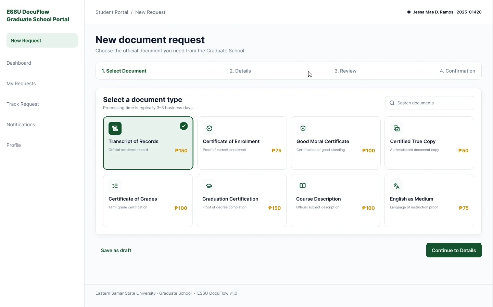
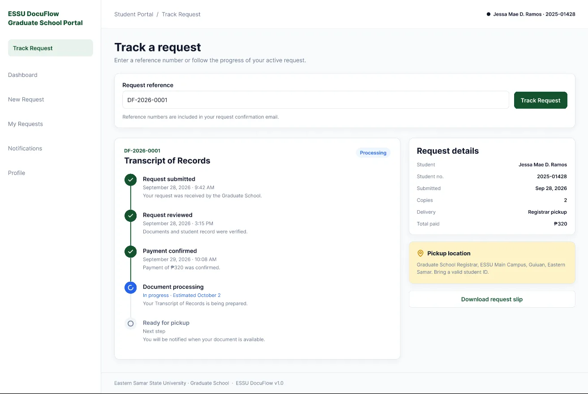
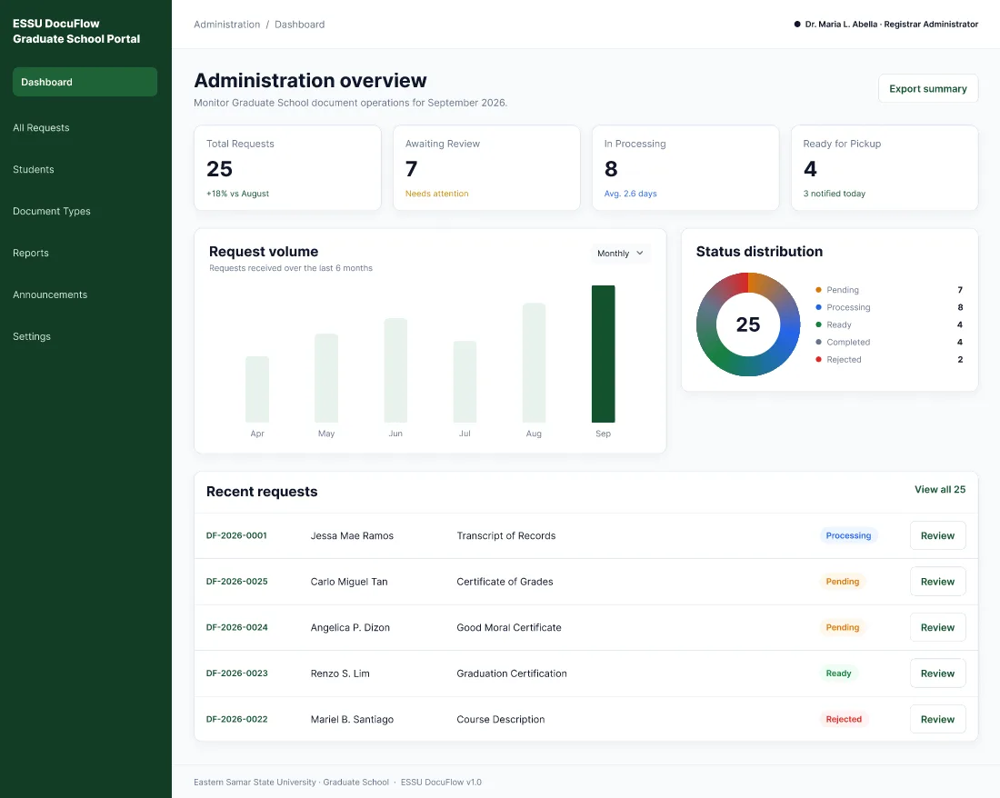

CASE STUDY / UI-UX DESIGN
ESSU DocuFlow
A graduate student document request portal designed to make requesting and tracking university documents clearer.

Problem
Graduate students need to request official documents from the Graduate School, but the process can feel unclear when request requirements, progress, and next steps are spread across separate interactions. The portal brings the request journey and its status into one place.
Users
The primary users are Eastern Samar State University Graduate School students who need documents, plus school staff who receive and process those requests.
My Role
I worked as the UI/UX Designer and Frontend Developer, designing and developing responsive interfaces for the Student, Admin, and Staff portals. My contributions included dashboards, document request forms, request tracking, messaging, and document management pages, with a focus on usability, consistent design components, and frontend functionality.
Design Process
The documented work includes a student request flow, wireframes for the dashboard, submission review, and tracking, plus final interface screens. Add any interviews, prototyping, or usability testing only if you conducted them.
User Flow
- Create an account or sign in
- Choose a document
- Enter request details
- Review and submit
- Track progress and receive updates
Design Decisions
The request review brings key details together in one scannable table, while a visible step indicator clarifies progress. The tracking view pairs a vertical status timeline with request details so students can find both progress and context in one place.
Wireframes
The page structure groups account access, document selection, request details, review, and tracking into distinct steps.
Student Dashboard
Gives students an at-a-glance view: summary counts at the top, a recent requests table with status labels, and announcements on the side.
New Request: Review & Submit
The last step before submitting. A step indicator shows progress, request details are in one scannable table, and the fee note and certification checkbox come right before the Submit button.
Request Tracking
Students enter a tracking number and see a vertical timeline of completed, in-progress, and pending steps, with a details card beside it.
Final UI
The final interface pairs a student-facing request journey with status tracking and administrative screens.



Frontend Implementation
The live project preview is available at ESSU DocuFlow . The project used SvelteKit, Svelte, HTML, CSS, JavaScript, MySQL, and Node.js. Git, GitHub, and VS Code were part of the development toolset.
Challenges & Improvements
Details to add: a real design or implementation challenge, how you addressed it, and what you would improve next. No usability test findings or outcome metrics are documented here.
Results & Learnings
The design makes the request sequence, review details, and tracking status visible in the supplied screens. Add verified outcomes and personal reflections here; no measured results are currently available.